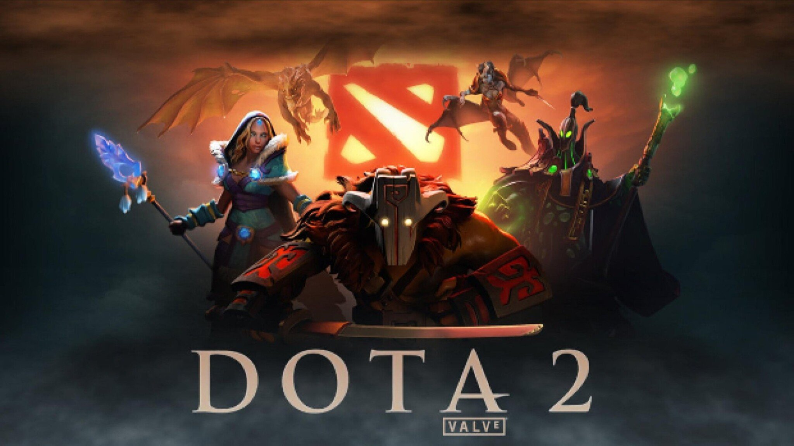
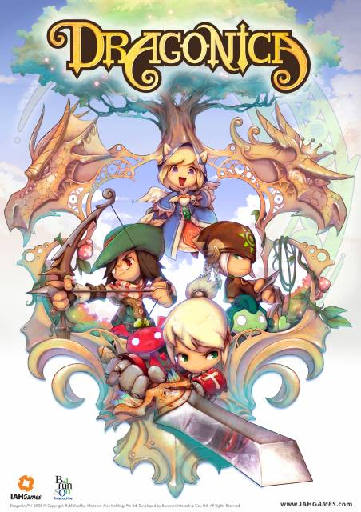
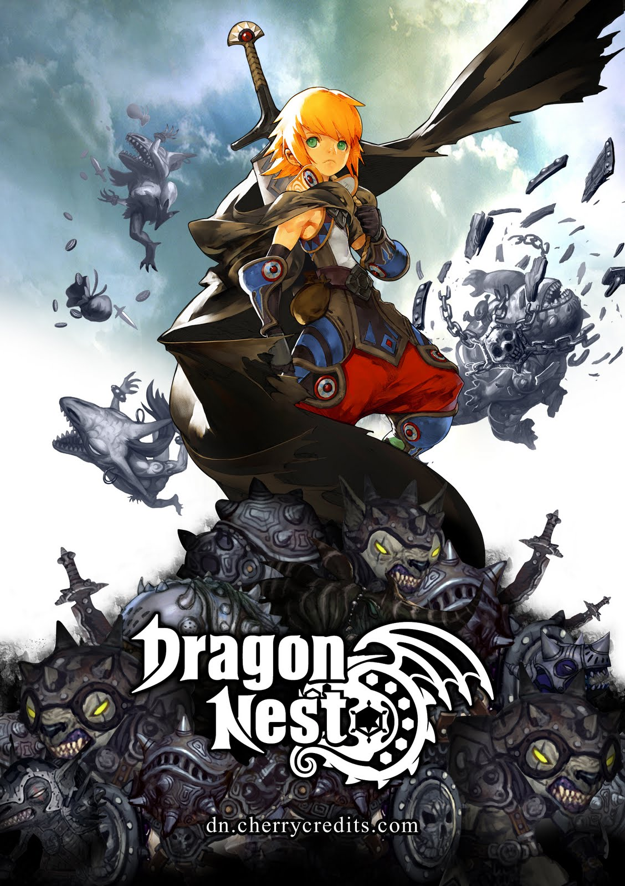

|  |
Dota 2 - Official Trailer Dota 2 is a multiplayer online battle arena video game developed and published by Valve. The Game is a sequel to Defense of the Ancient, which was a community-created mod for Blizzard Entainment's Warcraft III: Reign of Chaos and its expansion pack, The Frozen Throne. |
 |
Counter Strike : Global Offense - Official Trailer Counter-Strike: Global Offensive is a multiplayer first-person shooter video game developed by Valve and Hidden Path Entainment. It is the fourth game in the Counter-Strike series and was released for Windows, OS, X, Xbox 360, and Playstation 3 in August 2012, While the linux version was released in 2014. |
 |
PlayerUnknown's Battlegrounds - Official Trailer
PlayerUnknown's Battlegrounds in an online multiplayer battle royale game developed and published by PUBG Corporation, a subsidiary of South Korean video game company Bluehole. The game is based on previous mods that were created by Brendan "PlayerUnknown" Greene for other games, inspired by the 2000 Japanese film Battle Royale, and expanded into a standalone game under Greene's creative direction. |
|  |
Dragonica - Official Trailer
Dragon Saga called Dragonica pre-2010, is a free-to-play 3D side-scrolling massively multiplayer online role-playing game developed by Barunson Interactive and Gravity Interactive. Development has been ongoing since March 2006. Operation of Dragon Saga is relegated to different publishers for their respective regions. |
|  |
Dragon Nest - Official Trailer
Dragon Nest is a free-to-play fantasy MMORPG developed by EyeDentity and currently available in different regions and languages. Aside from boasting a non-targeting combat and skill system within instance dungeon, Dragon Nest also revolves around a rich story which is told in different points of view depending on the player's chosen class. |